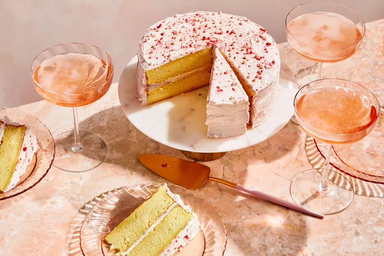

Pink Champagne Cake

Ingredients
2 1/4 cups all-purpose flour
2 1/4 tsps baking powder
3/4 tsp salt
3/4 cup unsalted butter room temperature
1 1/2 cup granulated sugar
5 large egg whites room temperature
1 1/2 tsp vanilla extract
1 cup pink champagne or sparkling wine, room temperature
Fuschia color gel
Vanilla butter cream
large egg whites
1 1/2 cups granulated sugar
1 1/2 cups unsalted butter room temperature, cubed
1 tsp clear vanilla extract
Fuschia color gel
Assembly
2 jars of cake sparkles or 1 jar sanding sugar
Wilton tip 1M
Wilton tip 12
Instruction
Preheat oven to 350F and grease and flour three 6" cake rounds, line with parchment.
In a medium bowl, whisk flour, baking powder, and salt. Set aside.
Using a stand mixer fitted with the paddle attachment, beat butter until smooth. Add sugar and beat on med-high until pale and fluffy (2-3mins).
Reduce speed and add egg whites one at a time, fully incorporating after each addition. Add vanilla.
Alternate adding flour mixture and champagne, beginning and ending with flour (3 additions of flour and 2 of champagne). Fully incorporating after each addition.
Add a small amount of Fuschia color gel using a toothpick. Mix to incorporate but try not to overmix.
Spread batter evenly into prepared pans. Smooth the tops with a spatula.
Bake for approx. 35 mins or until a toothpick inserted into the center comes out mostly clean.
Place cakes on wire rack to cool for 10mins then turn out onto wire rack to cool completely.
Assembly
Place one layer of cake on a cake stand or serving plate. Top with approximately 2/3 cup of frosting and spread evenly. Repeat with remaining layers and apply a thin coat of frosting all over the cake. Chill for 20mins.
Frost and smooth the sides. Chill for 20mins.
Using a toothpick, add a small amount of Fuschia color gel to the remaining frosting. Stir with a spatula to incorporate, or place back on the stand mixer to mix in the color.
Gently press cake sparkles or sanding sugar into the sides and top of the cake.***
Decorate with pink rosettes on top and beads along the bottom if desired.
enjoy your cake